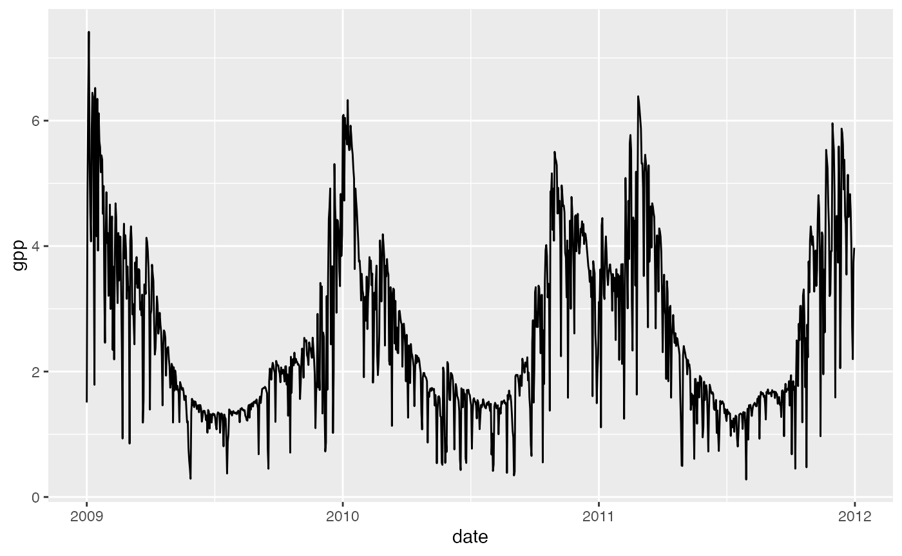

vignettes/prepare_forcing.Rmd
prepare_forcing.RmdALL BELOW IS COPIED FROM sofunCalVal/data/00_prepare_fluxnet_driver_data.R
knitr::opts_chunk$set(
collapse = TRUE,
comment = "#>"
)
# Routine to format the benchmark driver dataset
# based upon FLUXNET data. This routine assumes
# that the code is run on th Euler compute
# infrastructure
#
# The data generated is meant to drive the p-model
# and provide a good working / test dataset.
# The routine used is largely based on previous work
# REFERENCE PAPER BENI.
# Libraries, check for Euler access ----
library(tidyverse)## ── Attaching packages ─────────────────────────────────────── tidyverse 1.3.1 ──## ✓ ggplot2 3.3.5 ✓ purrr 0.3.4
## ✓ tibble 3.1.5 ✓ dplyr 1.0.7
## ✓ tidyr 1.1.4 ✓ stringr 1.4.0
## ✓ readr 2.0.2 ✓ forcats 0.5.1## ── Conflicts ────────────────────────────────────────── tidyverse_conflicts() ──
## x dplyr::filter() masks stats::filter()
## x dplyr::lag() masks stats::lag()##
## Attaching package: 'ingestr'## The following object is masked from 'package:rsofun':
##
## init_dates_dataframe
# if(!grepl('eu-', Sys.info()['nodename'])){
# stop("You are not on Euler, source data unavailable - abort abort abort!")
# }
# . set sites to ingest ----
fluxnet_sites <- ingestr::siteinfo_fluxnet2015 %>%
dplyr::slice(1:3) # just an example
# . grab fluxnet data ----
df_fluxnet <-
suppressWarnings(
suppressMessages(
ingestr::ingest(
siteinfo = fluxnet_sites,
source = "fluxnet",
getvars = list(
temp = "TA_F_DAY",
prec = "P_F",
vpd = "VPD_F_DAY",
ppfd = "SW_IN_F",
patm = "PA_F"),
dir = "~/data/FLUXNET-2015_Tier1/20191024/DD/",
settings = list(
dir_hh = "~/data/FLUXNET-2015_Tier1/20191024/HH/", getswc = FALSE),
timescale = "d"
)
)
)
# . get CRU data to complement fluxnet data ----
df_cru <- ingestr::ingest(
siteinfo = fluxnet_sites,
source = "cru",
getvars = "ccov",
dir = "~/data/cru/ts_4.01/"
)## Loading required namespace: ncdf4## Warning in .varName(nc, varname, warn = warn): varname used is: cld
## If that is not correct, you can set it to one of: cld, stn## Warning: The `x` argument of `as_tibble.matrix()` must have unique column names if `.name_repair` is omitted as of tibble 2.0.0.
## Using compatibility `.name_repair`.
## This warning is displayed once every 8 hours.
## Call `lifecycle::last_lifecycle_warnings()` to see where this warning was generated.
# . merge data into one "meteo" data frame ----
df_meteo <- df_fluxnet %>%
tidyr::unnest(data) %>%
left_join(
df_cru %>%
tidyr::unnest(data),
by = c("sitename", "date")
) %>%
group_by(sitename) %>%
tidyr::nest()
# . grab MODIS FPAR data ----
settings_modis <- get_settings_modis(
bundle = "modis_fpar",
data_path = "~/data/modis_subsets/",
method_interpol = "loess",
network = c("fluxnet","icos"),
keep = TRUE,
overwrite_raw = FALSE,
overwrite_interpol= TRUE,
n_focal = 0
)
df_modis_fpar <- ingest(
fluxnet_sites,
source = "modis",
settings = settings_modis,
parallel = FALSE,
ncores = 1
)## Number of available pixels: 289## Averaging across number of pixels: 1## loess...## spline...## linear ...## sgfilter ...## Warning: The `path` argument of `write_csv()` is deprecated as of readr 1.4.0.
## Please use the `file` argument instead.
## This warning is displayed once every 8 hours.
## Call `lifecycle::last_lifecycle_warnings()` to see where this warning was generated.## Number of available pixels: 289## Averaging across number of pixels: 1## loess...## spline...## linear ...## sgfilter ...## Number of available pixels: 289## Averaging across number of pixels: 1## loess...## spline...## linear ...## sgfilter ...
## renaming the variable
df_modis_fpar <- df_modis_fpar %>%
mutate(
data = purrr::map(data, ~rename(., fapar = modisvar_filled))
)
# . grab CO2 data ----
df_co2 <- ingestr::ingest(
fluxnet_sites,
source = "co2_mlo",
verbose = FALSE
)## [1] "ftp://aftp.cmdl.noaa.gov/products/trends/co2/co2_mm_mlo.txt"## /var/folders/f_/vvrf3z593z7_hnkqmjt6rwtw0000gq/T//RtmpJ2wr1P/filec41477fd642eset simulation parameters
params_siml <- list(
spinup = TRUE,
spinupyears = 10,
recycle = 1,
soilmstress = TRUE,
tempstress = TRUE,
calc_aet_fapar_vpd = FALSE,
in_ppfd = TRUE,
in_netrad = FALSE,
outdt = 1,
ltre = FALSE,
ltne = FALSE,
ltrd = FALSE,
ltnd = FALSE,
lgr3 = TRUE,
lgn3 = FALSE,
lgr4 = FALSE
)combine all data into the rsofun driver data format and save locally
p_model_fluxnet_drivers <- rsofun::collect_drivers_sofun(
site_info = fluxnet_sites,
params_siml = params_siml,
meteo = df_meteo,
fapar = df_modis_fpar,
co2 = df_co2,
params_soil = df_soiltexture
)
#> Warning: Variable 'snow' missing in meteo data frame.
#> Assuming zero for all dates.
#> Warning: Variable 'rain' missing in meteo data frame.
#> Assuming equal to 'prec' for all dates.
#> Warning: Variable 'tmin' missing in meteo data frame.
#> Assuming equal to 'temp' for all dates.
#> (same goes for tmax as assumed paired)
# . save data as a datafile, recognized by the package ----
save(p_model_fluxnet_drivers,
file = "~/trash/p_model_fluxnet_drivers.rda",
compress = "xz")Ingest GPP data from FLUXNET2015.
# Use the same sites as above
calib_sites <- fluxnet_sites %>%
pull(sitename)
calib_sites <- fluxnet_sites %>%
dplyr::filter(sitename %in% calib_sites)
# settings for data preparation
settings_ingestr_fluxnet <- list(
dir_hh = "~/data/FLUXNET-2015_Tier1/20191024/HH/",
getswc = FALSE,
filter_ntdt = TRUE,
threshold_GPP = 0.8,
remove_neg = FALSE
)
# . format fluxnet GPP data ----
p_model_fluxnet_calval <-
suppressWarnings(
suppressMessages(
ingestr::ingest(
siteinfo = calib_sites,
source = "fluxnet",
getvars = list(gpp = "GPP_NT_VUT_REF",
gpp_unc = "GPP_NT_VUT_SE"),
dir = "~/data/FLUXNET-2015_Tier1/20191024/DD/",
settings = settings_ingestr_fluxnet,
timescale = "d"
)
)
)
save(p_model_fluxnet_calval,
file = "~/trash/p_model_fluxnet_calval.rda",
compress = "xz")
# run the model for these parameters
# optimized parameters from previous work (Stocker et al., 2020 GMD)
params_modl <- list(
kphio = 0.09423773,
soilm_par_a = 0.33349283,
soilm_par_b = 1.45602286,
tau_acclim_tempstress = 10,
par_shape_tempstress = 0.0
)
output_new <- rsofun::runread_pmodel_f(
p_model_fluxnet_drivers,
par = params_modl
)
#> Warning: Error: Missing value in fapar for AR-Vir
output_new$data[[1]] %>%
ggplot(aes(date, gpp)) +
geom_line()